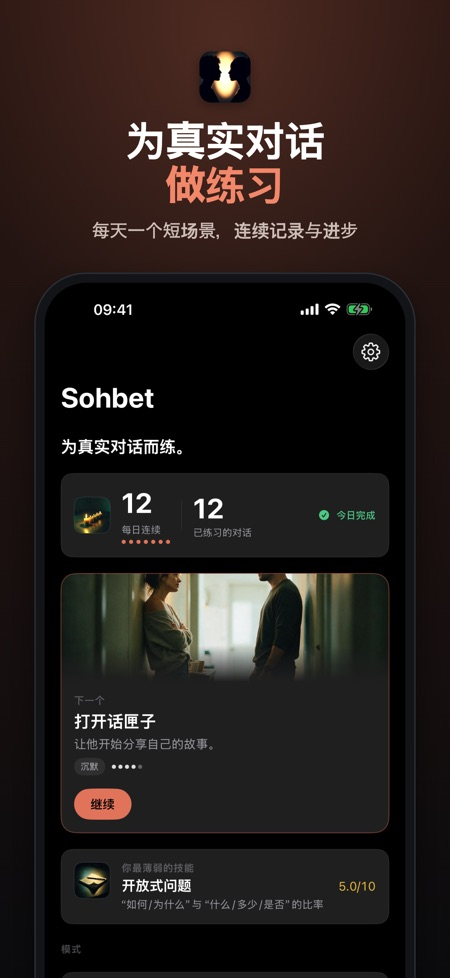

练习日常对话 提升沟通技巧. 无需订阅即可体验两次完整对话，包含实时对话、语音模式与详细评估。 无需注册账号，无需邮箱。 现已支持41种语言，Pro会员首周为试用期。 .

Sohbet 是一款让你在有真实反馈的对象身上练习社交技巧的游戏。
与你对话的角色由人工智能驱动，它不会主动迎合你。 如果你总是问封闭式问题，它会感到厌倦；如果你过多谈论自己，它会失去兴趣；只有在合适的时机问出正确的问题，它才会对你敞开心扉。 屏幕顶部的兴趣条会实时显示这一变化——如果兴趣条归零，对话即告结束。
对话结束时
评估不会以恭维开场。 它会逐轮分析：你的应对方式、为何成功或失败，以及你原本可以怎么说。 这里没有“更加开放”这类泛泛而谈的建议——每一条反馈都精确对应具体的轮次与你实际输入的句子。 系统给出的建议表达均可在现实中直接使用。
评分相当严苛。 普通对话的分数通常在50到60分之间；达到80分以上才算真正优秀。 一个只会盲目夸奖的评估者无法教给你任何东西。
用语音代替打字
你可以选择直接说话而非打字。 根据设定场景的不同，角色的声音分为男性或女性。 你的说话语速和停顿也会纳入评估——正如在现实对话中一样。
16种场景
咖啡馆邻座、家庭派对、工作晚宴、坐在陌生人身旁、礼貌打断他人对话、拒绝邀请。 场景难度由浅入深。 你还可以针对不同的性格重新挑战同一个场景——同样的背景，更难应对的对象。
根据短板生成场景
在进行数次对话后，你尚未掌握的技巧会逐渐清晰。 只需轻点一下，系统即可生成专门针对该特定短板的新场景。
历史记录
每次对话的文本与评估结果都会被保存。 你可以查看自己反复出现的习惯——了解自己是否总是在同一个地方陷入卡顿，或者是否正在取得进步。
隐私保护
无需注册账号，无需提供邮箱。 你的对话记录与评估结果保存在你的手机上。 对话过程中，文字会经由我们的服务器发送给负责生成角色回复和评估的 AI 模型，语音会发送给语音识别服务转成文字。 我们的服务器不保存这些文字，但有两个例外：出错的请求会保留 7 天，以便我们修复问题；只有在你于设置中主动开启时，一小部分对话样本才会保留 90 天，用于改进应用。 两者都不会与你的身份关联。 语音内容绝不会被保存为文件。
订阅服务
无需订阅即可体验两次对话——包含实时角色、语音模式与完整评估。 Sohbet Pro 采用按月订阅模式，首周为试用期：订阅后可解锁无限次对话、阅读分析所有对话的教练报告，以及针对短板生成专属场景。
订阅将在每个周期结束时自动续订。 你可以随时在“设置”>“Apple 账户”>“订阅”中取消。